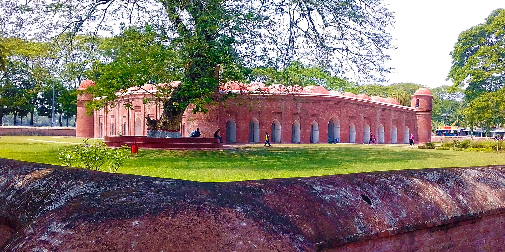
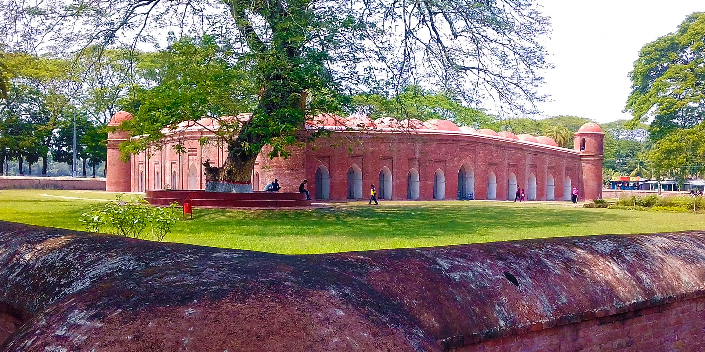

Sixty Dome Mosque
 

About Sixty Dome Mosque
The Sixty Dome Mosque, is a mosque in Bangladesh. It is part of the Mosque City of Bagerhat, a UNESCO World Heritage Site. It is the largest mosque in Bangladesh from the sultanate period. It was built during the Bengal Sultanate by Ulugh Khan Jahan, the governor of the Sundarbans. It has been described as "one of the most impressive Muslim monuments in the whole of the Indian subcontinent."
In the middle of the 15th century, a Muslim colony was founded in the mangrove forest of the Sundarbans, near the coast in the Bagerhat District by a saint-General, named Khan Jahan Ali. He preached in an affluent city during the reign of Sultan Nasiruddin Mahmud Shah, then known as 'Khalifalabad'. Khan Jahan adorned this city with more than a dozen mosques, the ruins of which are focused around the most imposing and largest multi-domed mosques in Bangladesh, known as the Shait-Gumbad Masjid (160'×108'). The construction of the mosque was started in 1442 and it was completed in 1459. The mosque was used for prayers, and also as a madrasha and assembly hall.
Location
It is located in Bagerhat district in southern Bangladesh which is in Khulna Division. It is about 5 kilometres (3 mi) from the main town of Bagerhat. Bagerhat is nearly 320 km (200 mi) from Dhaka which is the capital of Bangladesh.
Structure
The mosque is locally known as the 'Shat Gombuj Masjid', which in Bangla means Sixty Domed Mosque. However, there are 77 domes over the main hall and exactly 60 stone pillars. It is possible that the mosque was originally referred to as the Sixty Pillared Mosque where Amud meaning column in Arabic/Persian, later got corrupted to Gombuj in Bangla, which means domes. The 'Sixty Dome' Mosque has walls of unusually thick, tapered brick in the Tughlaq style and a hut-shaped roofline that anticipates later styles. The length of the mosque is 49 m (160 ft) tall and 33 m (108 ft) wide. There are 77 low domes arranged in seven rows of eleven, and one dome on each corner, bringing the total to 81 domes. There are four towers. Two of four towers were used to call azaan. The interior is divided into many aisles and bays by slender columns, which culminate in numerous arches that support the roof. The mosque has 77 squat domes with 7 four-sided pitched Bengali domes in the middle row. The vast prayer hall, although provided with 11 arched doorways on east and 7 each on north and south for ventilation and light, presents a dark and somber appearance inside. It is divided into 7 longitudinal aisles and 11 deep bays by a forest of 60 slender stone columns, from which springs rows of endless arches, supporting the domes. 1.8 m (6 ft) thick, slightly tapering walls and hollow and round, almost detached corner towers, resembling the bastions of fortress, each capped by small rounded cupolas, recall the Tughlaq architecture of Delhi.The mosque represents wonderful archeological beauty which was the signature in the 15th century.
Entry Fees
No Entry Fees.
Visiting Hours
Always open for visitors.